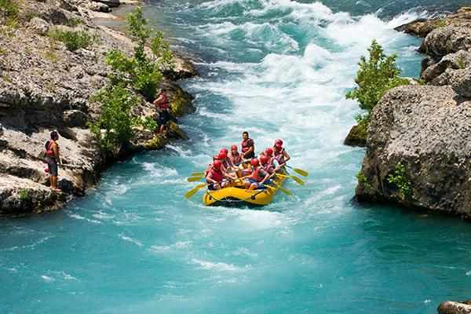

Ready for Your Next Adventure?
Have questions or want to book a private trip? Get in touch with our team today!
Contact Us Now
Half‑Day Mulunguzi Run
Duration: 3 hours | Difficulty: Beginner to Intermediate
Perfect for first‑timers and families. Paddle through Class II–III rapids while enjoying stunning views of Zomba Plateau. Includes safety briefing, all gear, and a riverside snack.
Price: MWK 78,750 (approx. $45 USD)

Full Day Expedition
Duration: 6 hours | Difficulty: Intermediate to Advanced
Conquer Class III–IV rapids on the lower Mulunguzi River. This trip includes a riverside BBQ lunch, professional photography, and a certified guide. Minimum age 14.
Price: MWK 155,750 (approx. $89 USD)

Overnight Wilderness Raft & Camp
Duration: 2 days / 1 night | Difficulty: Advanced
The ultimate adventure. Raft remote Class IV rapids, camp under the stars on a river beach, and enjoy a traditional Malawian meal cooked over an open fire. All camping gear and meals included.
Price: MWK 348,250 (approx. $199 USD)
All Available Trips at a Glance
Exchange rate: 1 USD = 1,750 MWK (approximate, subject to change)
| Trip Name | Duration | Difficulty | Rapids Class | Min. Age | Price (MWK / USD) |
|---|---|---|---|---|---|
| Half‑Day Mulunguzi Run | 3 hours | Beginner–Intermediate | II–III | 8+ | 78,750 MWK ($45) |
| Full Day Expedition | 6 hours | Intermediate–Advanced | III–IV | 14+ | 155,750 MWK ($89) |
| Overnight Wilderness Raft & Camp | 2 days / 1 night | Advanced | IV | 16+ | 348,250 MWK ($199) |
| Private Group Charter | Custom (3–8 hrs) | Tailored to group | II–IV | 8+ | From 612,500 MWK ($350) |